miniCycle User Manual
Getting Started
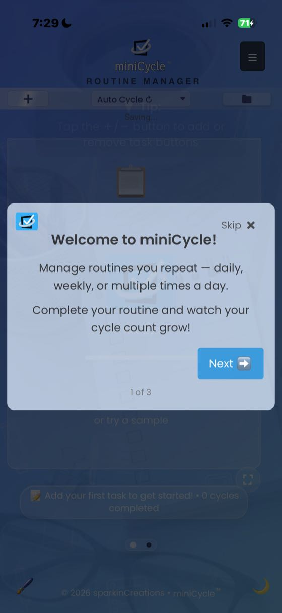
Welcome to miniCycle! This user manual will guide you through the features and functionalities of the app.
miniCycle is a routine manager that handles your repeatable tasks differently than traditional to-do apps. Most task managers treat each task as a one-off item and collect your personal data. miniCycle is different — it's a privacy-focused workflow tool that organizes your tasks into routines. When you complete all your tasks, the cycle is completed and they automatically reset so you can tackle them again. It's perfect for daily routines, weekly goals, and recurring habits.
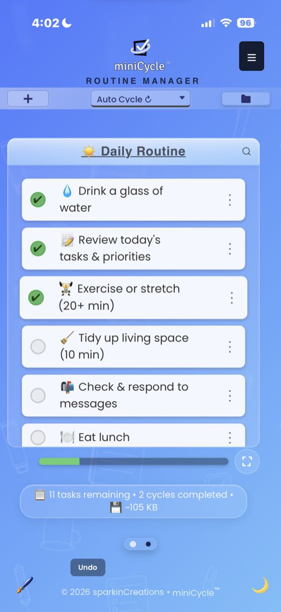
- Tap the + button to add a task or create a new routine
- Check off tasks as you complete them
- When all tasks are completed, the routine automatically resets (in Auto Cycle mode)
- Swipe left/right to switch between Task View and Stats Panel
Guided Tour
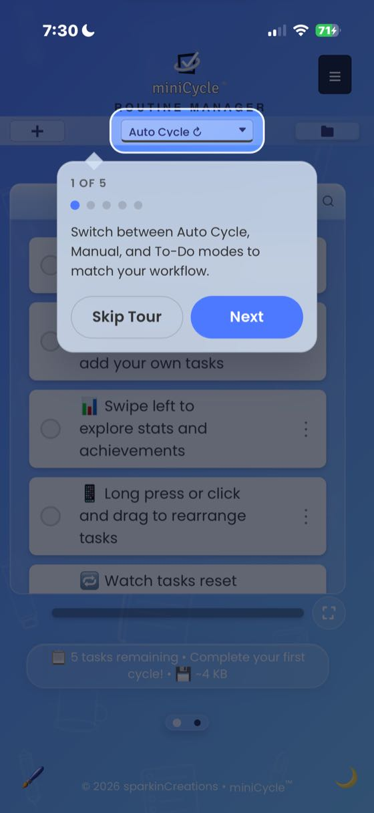
First-time users are offered a guided tour that walks you through the app's key features step by step. The tour highlights each element with a spotlight overlay and tooltip explaining what it does. You can also restart the tour at any time from the hamburger menu (☰) → Help & Support. Tours are available for the main interface, stats panel, settings, personalization, and more.
Managing Tasks
Adding Tasks
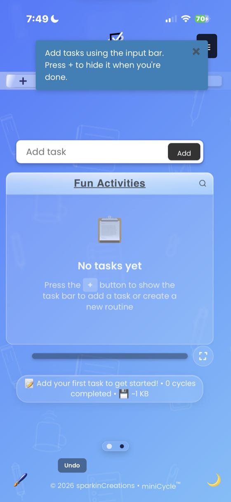
Tap the + button and select "Add Task" from the menu. Enter your task name and it will appear at the bottom of your list.
Completing Tasks
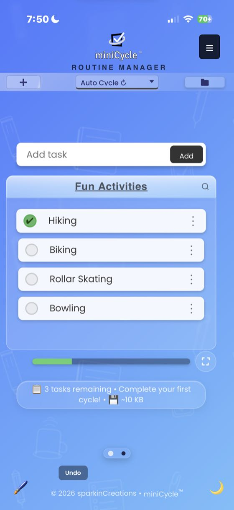
Tap the checkbox next to a task to mark it as complete. You can also undo a completion by tapping the checkbox again. Undo/redo is available for recent actions.
Cycle Complete
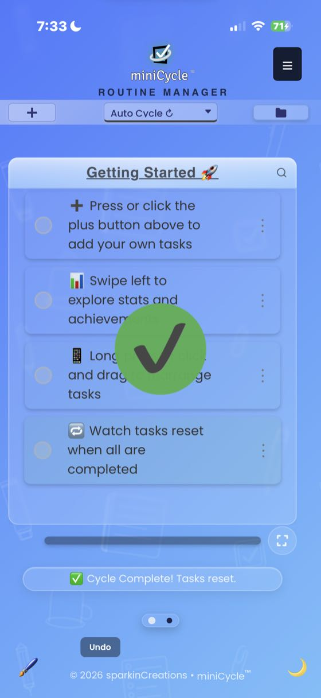
When all tasks are completed, a cycle complete animation plays and your tasks reset automatically (in Auto Cycle mode). Your cycle count increases with each completion.
If you have the completed-tasks dropdown turned on, finishing everything tucks each task into that dropdown and the list itself is empty for a moment. Rather than the "No tasks yet" prompt you would see in a brand-new routine, miniCycle shows "All tasks complete!" along with what to do next — start again with the cycle button in Manual Cycle mode, clear the finished tasks in To-Do Mode, or nothing at all in Auto Cycle mode, where the routine resets on its own.
Reordering Tasks
Drag and drop tasks to reorder them, or use the move arrows if enabled in Settings. Your preferred order is saved automatically.
Task Options
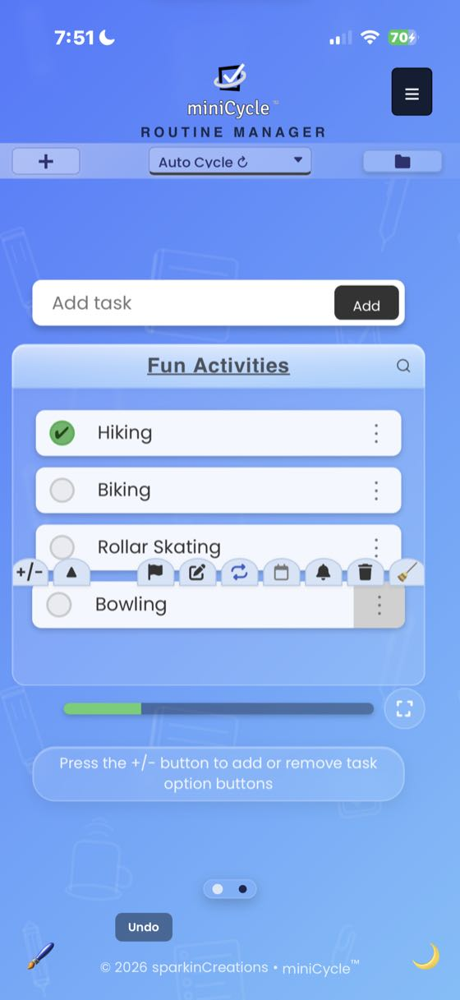
Long-press a task (or use the three-dots menu) to reveal task option buttons. Available buttons include customize (-/+), priority, edit, delete, recurring, due date, reminders, and clear on reset. You can choose which buttons appear using the Customize Task Options panel.
Not sure what an icon does? Press and hold it. Its name appears and the button does not activate, so you can check before you act. This works on the Quick Actions row and on the Routine Actions buttons in the routine switcher, where the icons have no visible label on a phone. A normal tap still works as usual.
High Priority Tasks
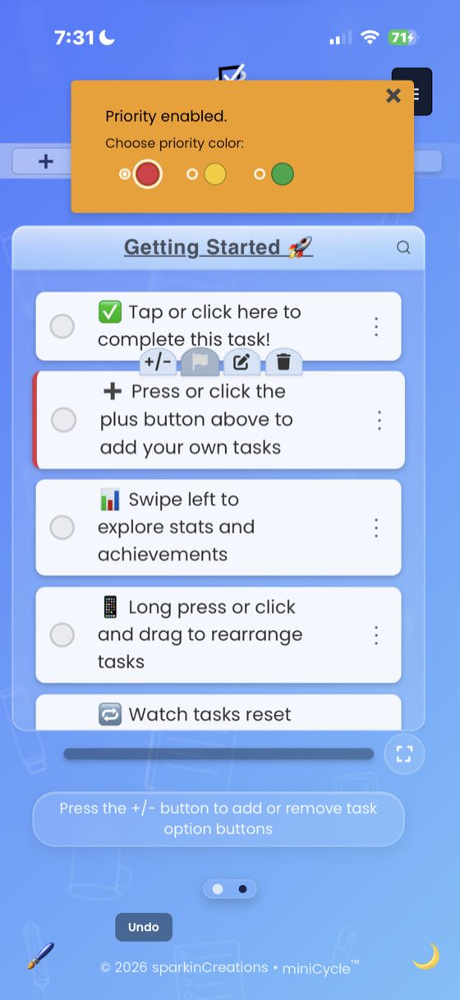
Mark important tasks with the priority button. Priority tasks display a red left border to help you focus on what matters most.
Editing Tasks
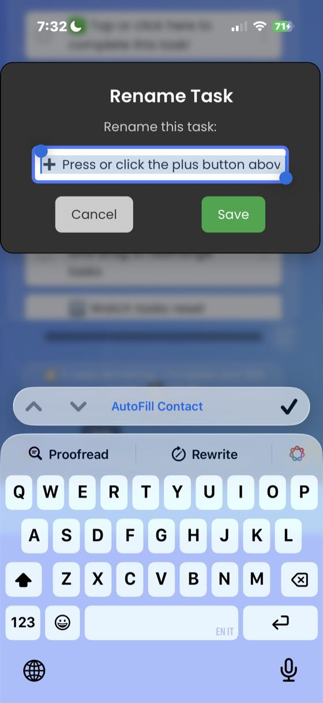
Tap the edit button in task options to rename a task. Press Save to confirm or Cancel to discard changes.
Due Dates
Tap the calendar icon in task options to set a due date. The date picker appears inline on the task. Due dates must be enabled in Customize Task Options first.
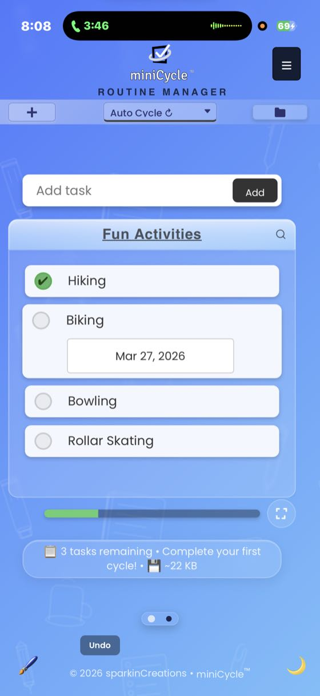
- Due dates appear as badges below the task name
- Overdue tasks are visually highlighted
Clear on Reset / Marked for Clearing
The ❌ button in task options marks a task to be removed automatically. The button is named for what it does in the mode you are using:
- Clear on Reset — in Auto Cycle and Manual Cycle mode. The task is removed when the cycle resets.
- Marked for Clearing — in To-Do Mode. The task is removed when you clear completed tasks.
Either way it is the same button and the same idea: a task you only need for this round, gone automatically instead of by hand. The button must be enabled in Customize Task Options.
Reminders
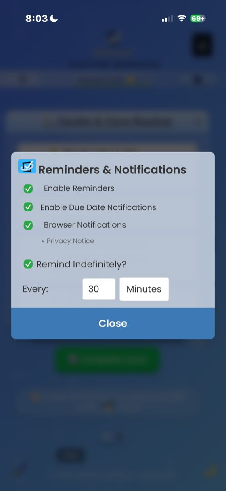
Enable reminders to get browser notifications about pending tasks. Make sure your browser allows notifications from miniCycle.
Recurring Tasks
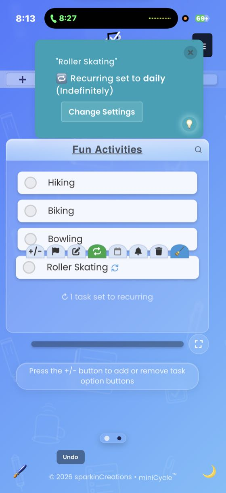
Set up tasks that repeat automatically:
- Hourly: Reappears every hour
- Daily: Reappears every day
- Weekly: Reappears every week
- Biweekly: Reappears every two weeks
- Monthly: Reappears every month
- Yearly: Reappears every year
- Specific dates: Choose exact dates for the task to appear
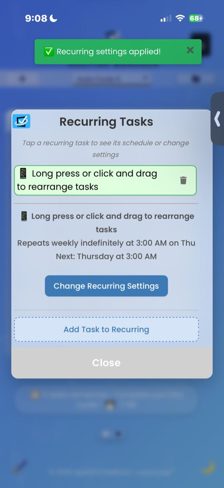
Access recurring task settings through the hamburger menu (☰) → Recurring, or through task option buttons on individual tasks.
Completed Tasks
In Settings, you can choose to collapse completed tasks into a separate section at the bottom of your task list. This keeps your active tasks front and center while still showing what you've accomplished.
Cycle Modes
miniCycle offers three different modes for how your routines behave:
Auto Cycle Mode
When enabled, all tasks automatically reset to incomplete once you finish everything. This is perfect for daily routines and recurring habits. Your cycle count increases with each completion.
Manual Cycle Mode
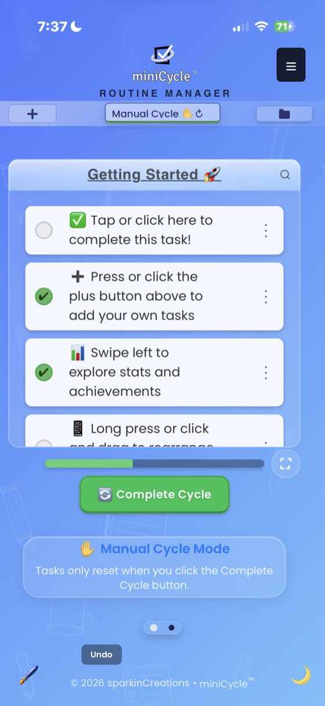
Tasks only reset when you manually tap the "Complete Cycle" button. You can press it at any time — it will complete any remaining tasks, increment your cycle count, and reset all tasks to incomplete. This gives you full control over when a new cycle begins.
To-Do Mode
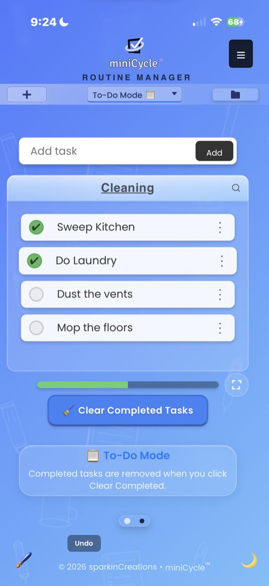
Completed tasks are removed instead of reset. Works like a traditional to-do list — perfect for one-time tasks, shopping lists, or projects.
Cleared Tasks
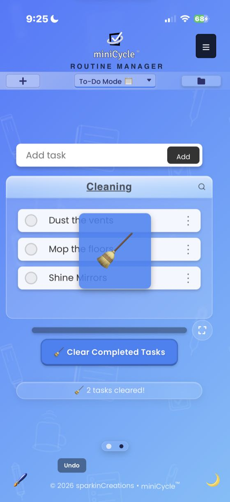
In To-Do Mode, tasks that are cleared aren't gone forever. You can view your cleared tasks history and recreate any task — with its due date, priority, and recurring settings intact — back into your routine. See History for how to view and recreate cleared tasks.
Managing Routines
Create different routines for different areas of your life:
- Work Tasks: Professional to-dos and projects
- Home Routine: Household tasks and maintenance
- Fitness Goals: Exercise routines and health habits
- Study Plan: Learning objectives and skill development
Routine Switcher
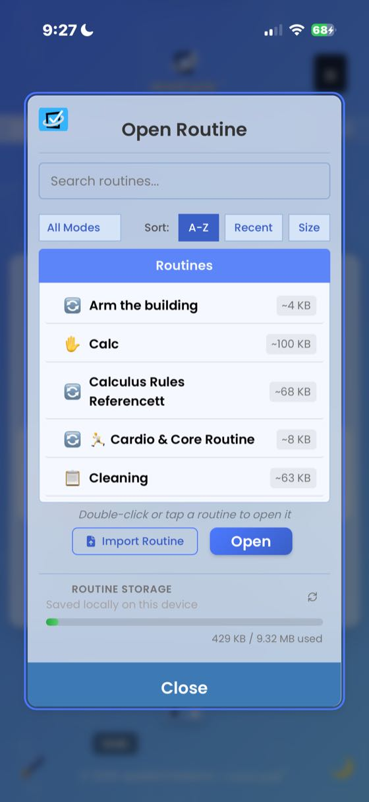
Access the routine switcher through the folder icon or hamburger menu (☰) → "Open Existing Routine":
- Browse and select from your existing routines
- Preview routine contents before switching — tasks appear in a preview window when you select a routine
- Double-tap a routine to open it immediately without pressing the Open button
- Double-tap the preview pane to pop it out as a full review modal showing all tasks and completion status
- Rename or delete routines using the action buttons
- See storage usage for each routine
Creating New Routines
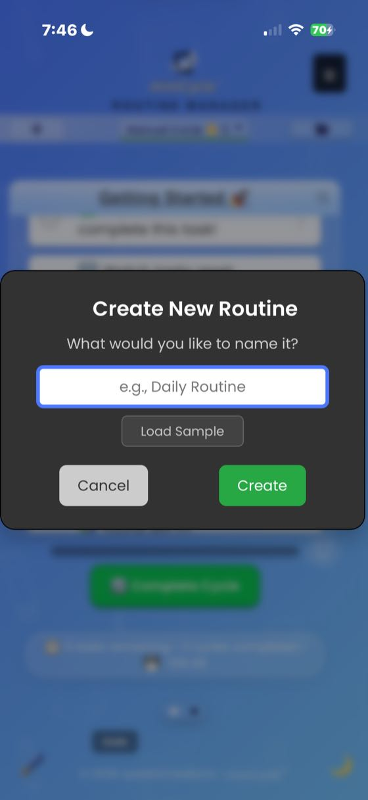
Tap the + button and select "Create New Routine", or use the hamburger menu (☰) → "New Routine". Give your routine a name and start adding tasks.
Duplicating Routines
Create a copy of any routine using the hamburger menu (☰) → Routine Actions → "Duplicate", or by tapping the copy icon in the routine switcher. The duplicate is created with the same tasks and settings as the original.
Bulk Task Actions
Access bulk operations through the hamburger menu (☰) → Task Actions & Features:
- Auto-uncheck daily: Automatically uncheck all tasks at a set time each day (see below)
- Uncheck All: Reset all tasks to incomplete (one-time, immediate)
- Delete All: Remove all tasks from the current routine
Auto-Uncheck Daily
Toggle Auto-uncheck daily in the hamburger menu (☰) → Task Actions & Features to make all tasks in the current routine uncheck themselves at a configurable time every day. The default time is 12:00 AM (midnight). Each routine has its own setting — you can enable it on some routines and leave it off on others.
Once enabled, a small italic indicator appears above the task list showing when the next reset will happen (e.g. "All tasks auto-uncheck daily at 12:00 AM"). Tap the indicator to change the time, or use the time button next to the toggle in the menu.
This is different from completing a cycle. The auto-uncheck only resets your tasks for the day — it does not increment your cycle count, unlock badges, or trigger any milestone events. It's designed for routines where you want a fresh slate every morning regardless of whether yesterday's tasks all got done (morning checklists, hygiene routines, end-of-day rituals).
If your device is asleep or the app is closed when the time arrives, the reset still happens the next time you open the app — you'll see a brief notification confirming what was reset. The setting also travels with the routine when you export it as a .mcyc file and share it with others.
Importing Routines
Import .mcyc files from other devices or users using the hamburger menu (☰) → Routine Actions → "Import", or the "Import Routine" button in the routine switcher. You can also drag and drop .mcyc files directly into the app window.
If miniCycle is installed as a PWA (see below), you can open .mcyc files directly from your device's file manager and they will be imported automatically.
Installing as a PWA
miniCycle can be installed to your home screen or desktop for a native app-like experience. To install:
- Mobile (iOS Safari): Tap the Share button → "Add to Home Screen"
- Mobile (Chrome/Edge): Tap the browser menu → "Install app" or "Add to Home Screen"
- Desktop (Chrome/Edge): Look for the install icon in the address bar, or use the browser menu → "Install miniCycle"
A notification may also appear after using the app for a short time, prompting you to install. Once installed, miniCycle works offline and can open .mcyc files directly.
Statistics & Achievements
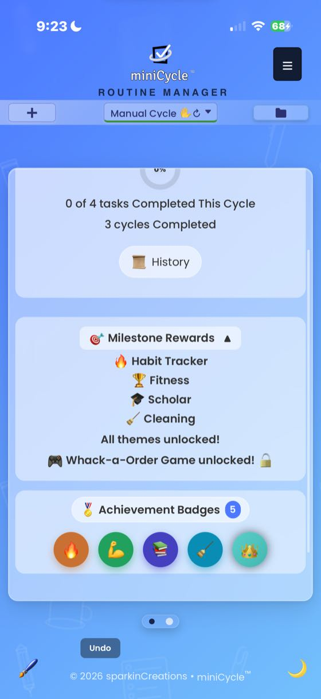
Performance Tracking
- Cycle Count: How many times you've completed this routine
- Tasks Completed: Total tasks you've checked off
- Progress Ring: Visual indicator of current cycle progress
Milestone Badges
Earn badges by completing cycles or clearing tasks — whichever milestone you reach first unlocks the badge:
- Habit Tracker 🔥 (5 cycles / 5 tasks): First milestone — unlocks Habit Tracker vocabulary theme
- Fitness 💪 (25 cycles / 125 tasks): Getting consistent — unlocks Fitness vocabulary theme
- Scholar 📚 (50 cycles / 250 tasks): Building momentum — unlocks Scholar vocabulary theme
- Cleaning 🧹 (75 cycles / 375 tasks): Dedicated user — unlocks Cleaning vocabulary theme
- Crowned 👑 (100 cycles / 500 tasks): Champion status — unlocks a mini-game
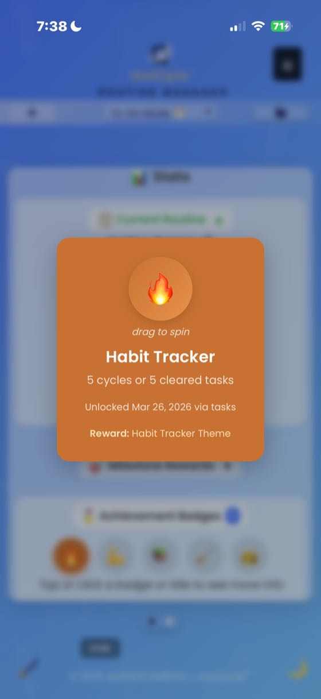
Achievements Page
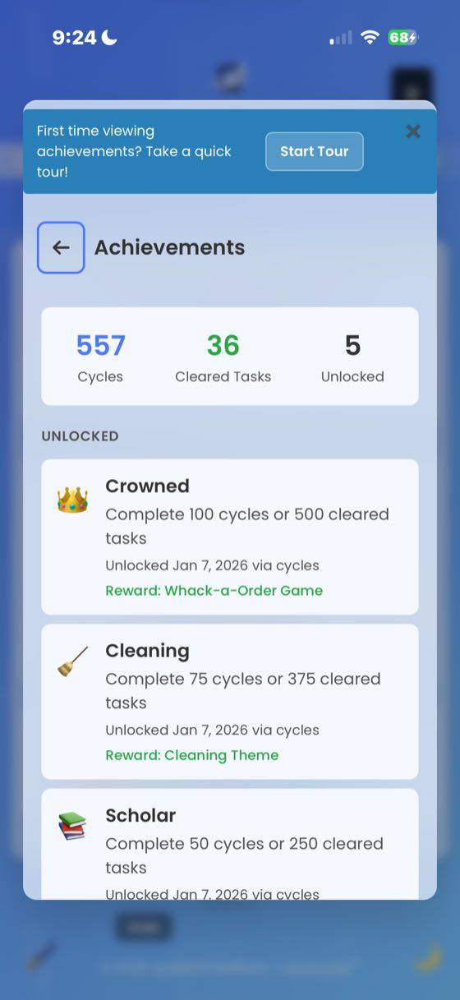
Tap any badge in the Stats Panel to view the full Achievements page. This shows all tiers, your progress toward each, and which rewards you've unlocked.
Theme Unlocks
Reaching milestones unlocks vocabulary themes that transform a routine's personality. Each theme changes both the language and the color palette throughout the app — the Fitness theme relabels tasks as workouts with an energetic color scheme, Scholar uses study-focused language with academic tones, Cleaning uses housework terms with fresh colors, and so on. Assign a vocabulary theme to any routine using the 🎨 button in the routine switcher. Check the Stats Panel to see your current theme and your progress toward the next unlock.
Mini-Game
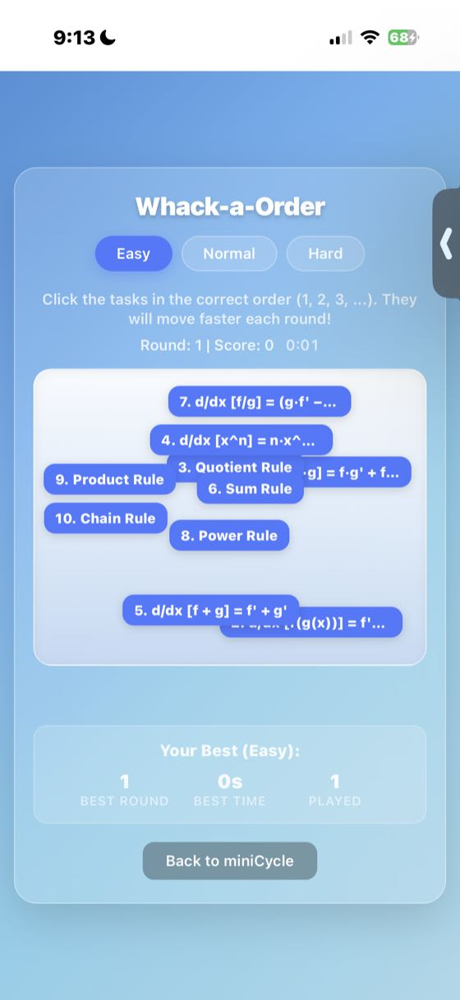
Reaching the final milestone (Crowned — 100 cycles or 500 cleared tasks) unlocks a bonus mini-game accessible from the hamburger menu (☰) → Rewards & Extras.
Customization
Dark Mode
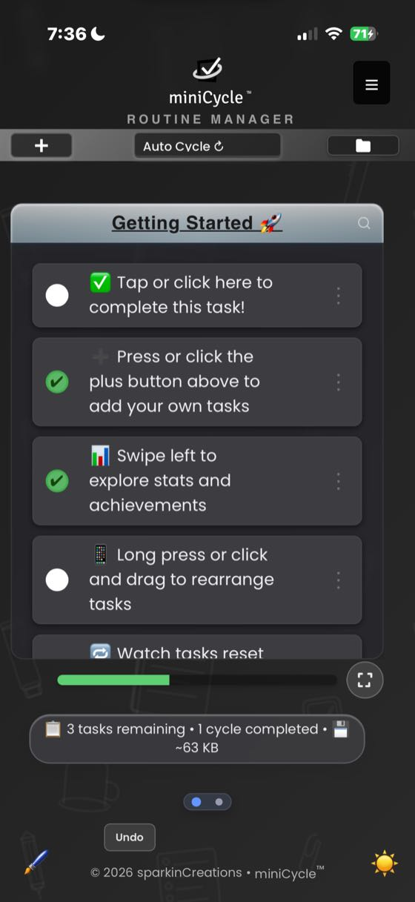
Toggle dark mode using the moon/sun icon in the lower right corner, or through Settings. Each theme has its own dark mode variant.
Themes
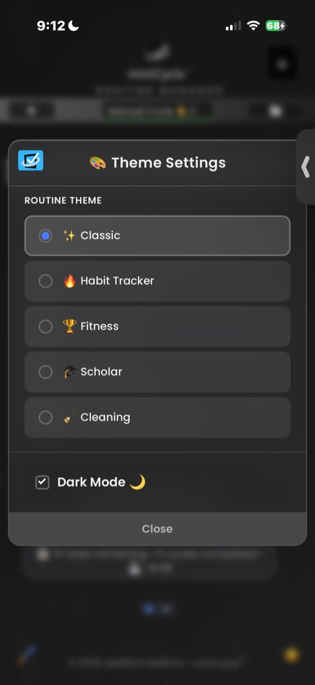
Vocabulary themes change the language and icons used throughout a routine. Once you've earned your first milestone (Habit Tracker at 5 cycles or 5 cleared tasks), a Themes option appears in the hamburger menu (☰) → Rewards & Extras → "Themes". You can also assign a theme to a specific routine using the 🎨 button in the routine switcher. Available themes: Classic (always available), Habit Tracker (5 cycles), Fitness (25 cycles), Scholar (50 cycles), and Cleaning (75 cycles). See Statistics & Achievements for milestone details.
Personalization
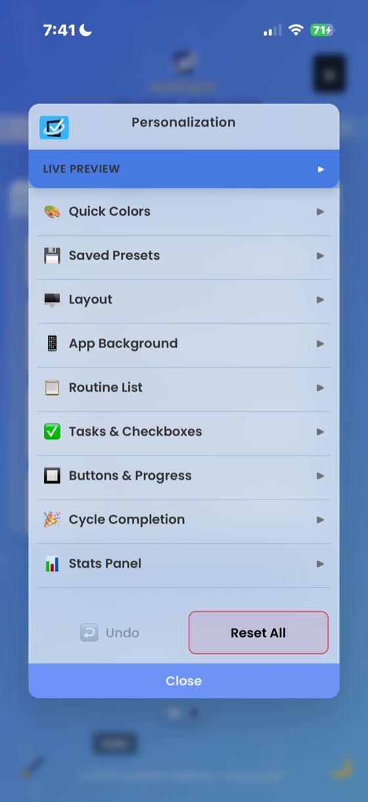
For deeper customization, open the hamburger menu (☰) → "Personalization" to access the color picker panel. This lets you:
- Customize colors for individual UI elements (task background, title, checkboxes, and more)
- Upload a custom background image
- Apply quick preset color schemes
- Save, load, export, and import your custom color presets
- Undo color changes or reset to defaults
Custom colors only apply when using the Classic theme. Vocabulary themes override custom colors with their own color palette.
Task Option Buttons
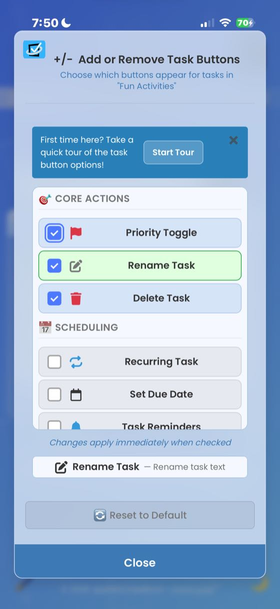
Customize which buttons appear on your tasks through the Customize (-/+) button or hamburger menu (☰) → Task Options. Available per-routine options:
- Customize (-/+): Opens this customization panel
- Priority (!): Mark tasks as high priority
- Edit: Rename a task
- Delete: Remove a task
- Recurring: Set up repeating schedules
- Due Date: Set deadlines with a calendar picker
- Reminders: Enable browser notifications
- Clear on Reset: Remove the task automatically when the cycle resets — shown as Marked for Clearing in To-Do Mode, where it removes the task when completed tasks are cleared
Global options (apply to all routines):
- Move Arrows: Up/down buttons for reordering tasks
- Three-Dots Menu: Alternative to long-press for accessing options
Settings
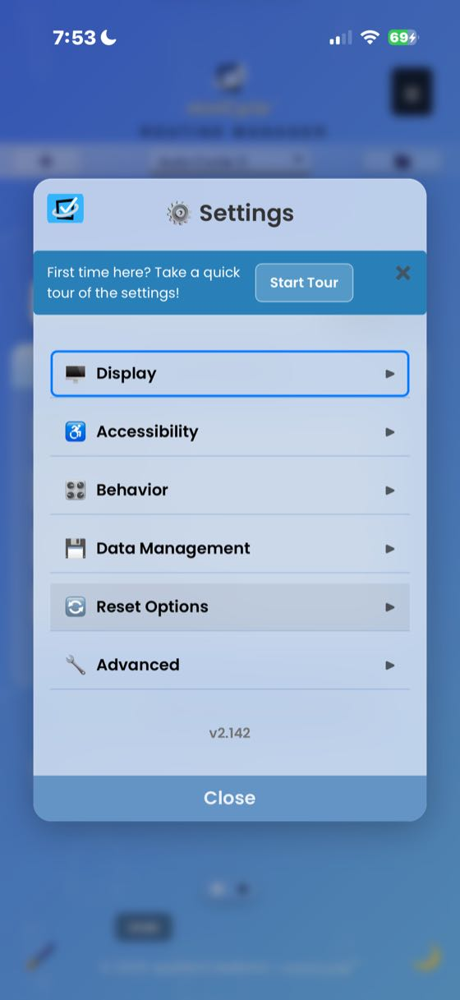
Access Settings from the hamburger menu (☰) → Settings & Personalization → Settings. Options are organized into collapsible sections:
Display:
- Show Help Window, Show Quick Actions, Customize Task Options, Dark Mode, Show Completed in Dropdown
- Open one menu section at a time: On by default. Expanding a section in the hamburger menu, Settings or Personalization collapses the others, so you see one at a time instead of a long scroll. Clicking anywhere in the modal outside the sections collapses them all. Turn it off to keep several open at once — the app then remembers which were open, as it did before.
Behavior:
- Scroll to New Task, Scroll to Last Task on Load, Completed Tasks display (inline or collapsed), Enable Notifications
Data Management:
- Backup All Routines, Restore All Routines
Reset Options:
- Reset Onboarding, Reset Notification Position, Reset Recurring Default, Reset Achievements, Reset All Tours
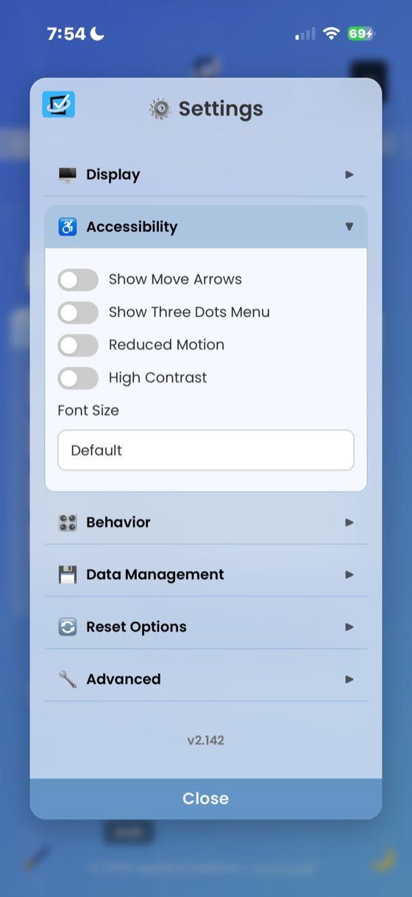
Accessibility:
- Reduced Motion: Disables CSS animations and transitions for users sensitive to motion. Works alongside your operating system's "Reduce Motion" setting.
- High Contrast: Enhances visual contrast throughout the interface for users with low vision or color sensitivity.
- Font Size: Choose from Small (14px), Default (16px), Large (18px), or Extra Large (20px) to adjust text size across the entire app.
Advanced:
- App Diagnostics & Testing, Check for Updates, Debug Mode, Try Lite Version, Factory Reset
Responsive Design
miniCycle works seamlessly across devices — phone, tablet, or desktop. Your experience adapts to whatever screen you're using.
Data Management
Privacy & Local Storage
All your data stays on your device. Nothing is sent to external servers, so your tasks and information remain completely private.
What is Local Storage?
Local storage is a feature built into your web browser that allows websites and apps to save data directly on your device. Unlike cloud-based apps that store your information on remote servers, miniCycle keeps everything in your browser's local storage — similar to how a native app stores data on your phone. This means:
- Your data never leaves your device
- No account or login required
- Works completely offline
- No one else can access your routines
Automatic safety nets
miniCycle quietly protects your data in the background: a daily automatic
backup is kept for each of the last 10 days, up to 50 named manual backups
are stored on your device, and a safety backup is created before every
restore. Non-recurring tasks cleared in To-Do Mode are kept for 90 days
(visible in the Cleared Tasks view) before being pruned automatically, and
may contribute to cleared-task achievements. Recurring task occurrences
continue according to their schedule and are not added to Cleared Tasks.
Monitoring Storage Usage
You can check how much storage your routines are using in two ways:
- Status bar: The bottom of the task view shows the current routine's size (e.g., "~3 KB")
- Routine Switcher: Open the folder icon to see the Open Routine modal. Each routine displays its storage size, and at the bottom you'll see total usage like "9 KB / 9.91 MB used" — this shows how much of your browser's available local storage miniCycle is using
Storage Limits
Most browsers provide between 5-10 MB of local storage per website. miniCycle routines are lightweight (typically 1-5 KB each), so you can create hundreds of routines before approaching any limits. If you're concerned about storage, you can export routines as .mcyc files and delete ones you no longer need.
Backup Reminders
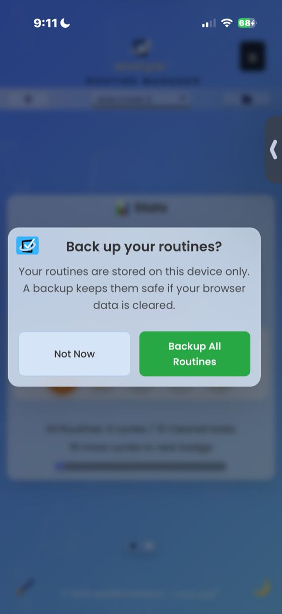
miniCycle automatically reminds you to back up your data. Reminders appear after 14 days without a backup, every 25 completed cycles, or every 100 cleared tasks. If you dismiss a reminder, it won't appear again for 7 days. You can back up immediately from the reminder or dismiss it.
Download & Backup
- Download Routine: Save the current routine as a .mcyc file via hamburger menu (☰) → Routine Actions → Download
- Backup All Routines: Create a complete backup of all routines and settings via Settings → Data Management
- Share .mcyc routine files with friends or colleagues
Import & Restore
- Import Routine: Load a single .mcyc file
- Restore All Routines: Restore from a complete backup
Factory Reset
Clear all data and start completely fresh if needed. This removes all routines, settings, achievements, undo/redo history, cached data, and IndexedDB databases. This action cannot be undone, so make sure to backup anything important first.
Advanced Features
Focus View
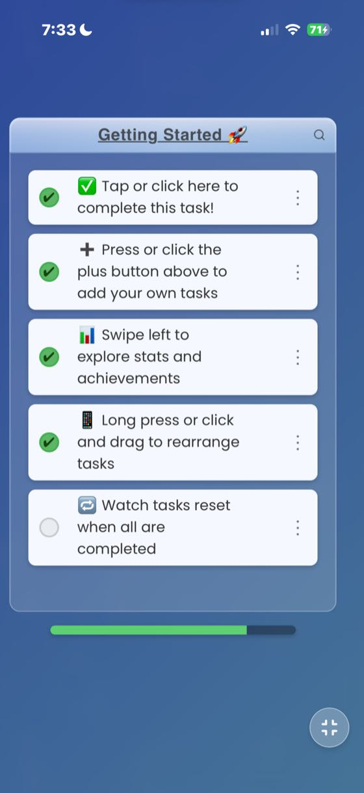
Focus View provides a distraction-free way to work through a routine. Tap the Focus View button beside the progress bar (or use the menu) to activate it. The header, footer, navigation, and help window fade away, leaving only your routine on a clean backdrop. Exit with the ✕ in the top-left corner or by pressing Escape. Your view preference is saved and persists across sessions.
While in Focus View:
- Floating action button (bottom-right): honors your routine's mode — Cycle in Manual Cycle mode and Clear in To-Do Mode. In Auto Cycle mode there is no button, because the routine resets itself the moment you finish the last task.
- ⋯ menu (top-right): in Focus View this is the only menu — the ☰ button is still visible but inactive, so everything you need is here. Switch or create routines, toggle dark mode, uncheck all, delete all, and open Settings — so changing a reminder, a theme or a backup option no longer means leaving the routine you are working through.
- Panel switcher (bottom): the pills read Task | Routine | Stats — swipe, tap a pill, or use Shift+Arrow keys to move between panels.
Task Card (One Task at a Time)
Focus View's Task panel shows only your current step — the first unchecked task in your routine — on a single card with a "3 of 10" position indicator. Tap Complete task to check it off exactly as if you tapped it in the list (progress, achievements, and undo all count normally); the card automatically advances to the next unchecked task. Use the ‹ › buttons — or swipe up/down on the card on touch screens — to peek at other tasks, including completed ones (shown dimmed, where the button flips to Mark incomplete). In Auto Cycle mode, completing the last task plays a short Cycle complete! celebration and starts you back at task 1. The Task tab appears after you finish or skip the first-run introduction.
Undo/Redo
Made a mistake? Use the undo button to reverse recent actions, or use Ctrl+Z / Cmd+Z on your keyboard. Redo with Ctrl+Y / Cmd+Y. Your undo history is preserved per routine.
Search & Filter
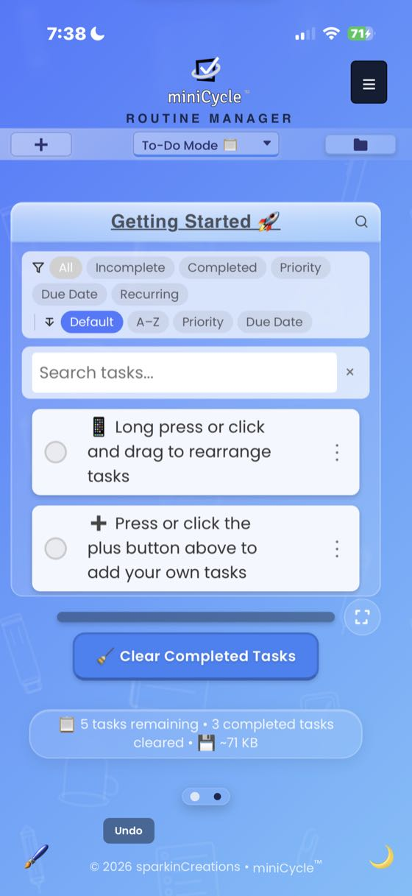
Use the search icon to filter tasks by name. A red indicator shows when a filter is active. The search bar appears automatically when you have 3 or more tasks.
On mobile, tapping the search bar activates a focused overlay that dims the rest of the screen, keeping your attention on the search. Filter chips (All, Incomplete, Completed, Priority, Due Date, Recurring) and sort options (Default, A-Z, Priority First, Due Date) let you narrow results quickly.
History
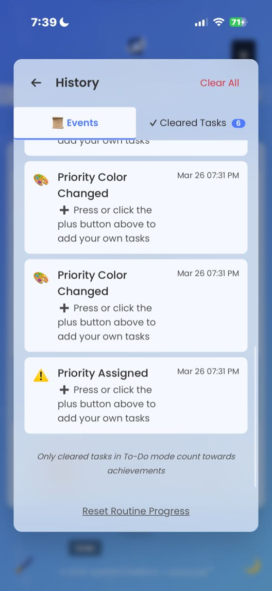
View your routine history from the Stats Panel by tapping the History button. The History panel has two tabs:
- Events: Cycle completions, achievements unlocked, and tasks cleared — with timestamps
- Cleared Tasks: Non-recurring tasks removed in To-Do Mode. Select tasks with checkboxes and tap "Recreate Selected" to restore them to your routine. Recurring tasks are not added here — they continue on their own schedule, so there is nothing to restore.
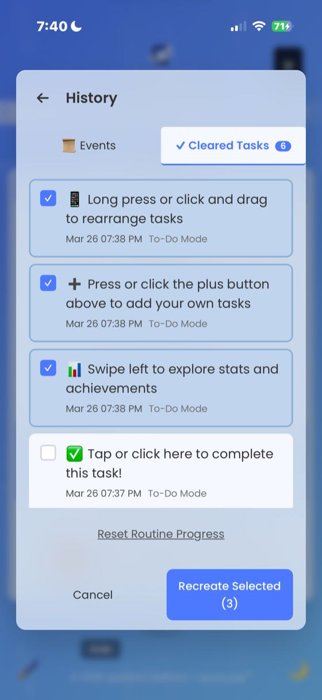
You can also reset your routine progress (cycle count and history) from the bottom of the History panel.
About
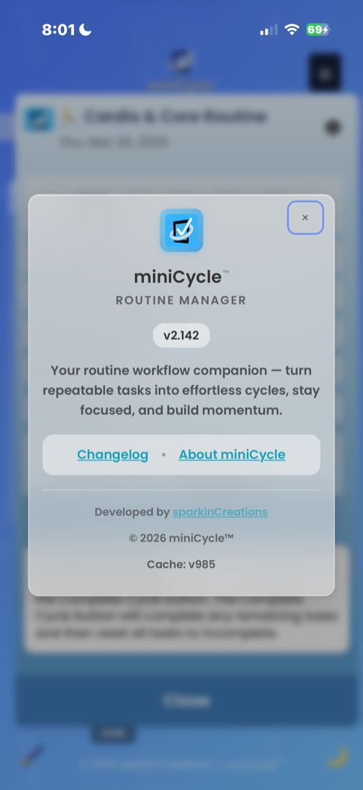
View app version and information through the hamburger menu (☰) → "About miniCycle".
App Diagnostics
Run app health checks, verify data integrity, and view debug information through Settings → Open App Diagnostics & Testing. This includes tools for backup management, data repair, and generating debug reports if you need to troubleshoot an issue.
Keyboard Shortcuts
miniCycle is fully keyboard-accessible. Here are the available shortcuts:
General
- Ctrl+Z (Windows) / Cmd+Z (Mac): Undo last action
- Ctrl+Y or Ctrl+Shift+Z (Windows) / Cmd+Y or Cmd+Shift+Z (Mac): Redo last action
- Escape: Close any open menu or modal
- Shift+Right Arrow: Switch to Stats Panel
- Shift+Left Arrow: Switch back to Task View
Tasks
- Enter on a task checkbox or label: Toggle task completion
- Enter while editing a task name: Save changes
- Escape while editing a task name: Cancel and discard changes
Task Options
- Left/Right Arrows: Navigate between task option buttons
- Enter or Space: Activate the focused button
- Escape: Close task options and return focus to the task
Routine Switcher
- Enter while editing a routine name: Save the new name
- Escape while editing a routine name: Cancel and restore original name
Settings & Menus
- Enter or Space: Toggle settings switches and expand/collapse menu sections
- Up/Down Arrows: Navigate dropdown options
Frequently Asked Questions
How do I rename a routine?
Tap on the routine title at the top of the task list, or use the rename option in the routine switcher.
What happens if I delete a routine?
Deleted routines cannot be recovered unless you have an exported backup file (.mcyc).
Can I use miniCycle offline?
Yes! miniCycle is a Progressive Web App (PWA) that works completely offline since all data is stored locally on your device.
How do I set up recurring tasks?
Long-press a task (or use three-dots menu) and tap the recurring icon. Choose your frequency and optional time settings.
Why aren't my notifications working?
Ensure that reminders are enabled for the task, and that your browser/device allows notifications from miniCycle.
How do I backup my data?
Use Settings → Backup All Routines to create a complete backup, or use the hamburger menu → Download Routine for individual routines.
Can I sync data between devices?
Not automatically — miniCycle is privacy-focused with no cloud sync. However, you can export from one device and import to another using .mcyc files.
What's the difference between priority and due dates?
Priority marks important tasks with a visual indicator (red border). Due dates set a specific deadline and can trigger reminders.
What's the difference between routines and cycles?
A routine is the persistent checklist you create. A cycle is one complete run-through of that routine. Your cycle count tracks how many times you've completed the routine.
Where did my cleared tasks go?
In To-Do Mode, cleared tasks are saved in a history. You can view and restore them from the cleared tasks panel.
How do I reset the onboarding tutorial?
Go to Settings → Reset Onboarding to see the welcome tutorial again. You can also restart the guided tour from the hamburger menu (☰) → Help & Support.
How do I change the text size?
Go to Settings → Accessibility → Font Size and choose from Small, Default, Large, or Extra Large.
What are vocabulary themes?
Vocabulary themes change both the language and colors of a routine. For example, the Fitness theme relabels "tasks" as "workouts" and applies an energetic color palette. Unlock themes by reaching milestone badges, then assign them per-routine using the 🎨 button in the routine switcher.